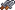
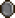
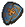
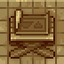

Barracks
Barracks is a location in the Crossroads. It is unlocked after completing the quest "Fighting Spirit Required".
Here, the Keeper can prepare the defenses.
Swords
Building barricades and hiring mercenaries gives  
Squads
An 
Blueprint Desk
The following blueprints can be crafted at the Blueprint Desk in the Barracks:
 Barracks | ||||||||||||
|---|---|---|---|---|---|---|---|---|---|---|---|---|
|